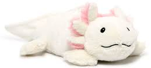

Hello, I love my dumb son, and I am here to introduce him to you. he is a weighted axololt plush and he smells like lavender also he can go in the microwave

Love, I am full of love for my silly little guy who is an axolotl. axolotles are like is a cool salamander with frills on his face, these are his gills and he uses them to breath. he also has a mouth that is a silly smile on his face. if I was an axololt I would be very happy